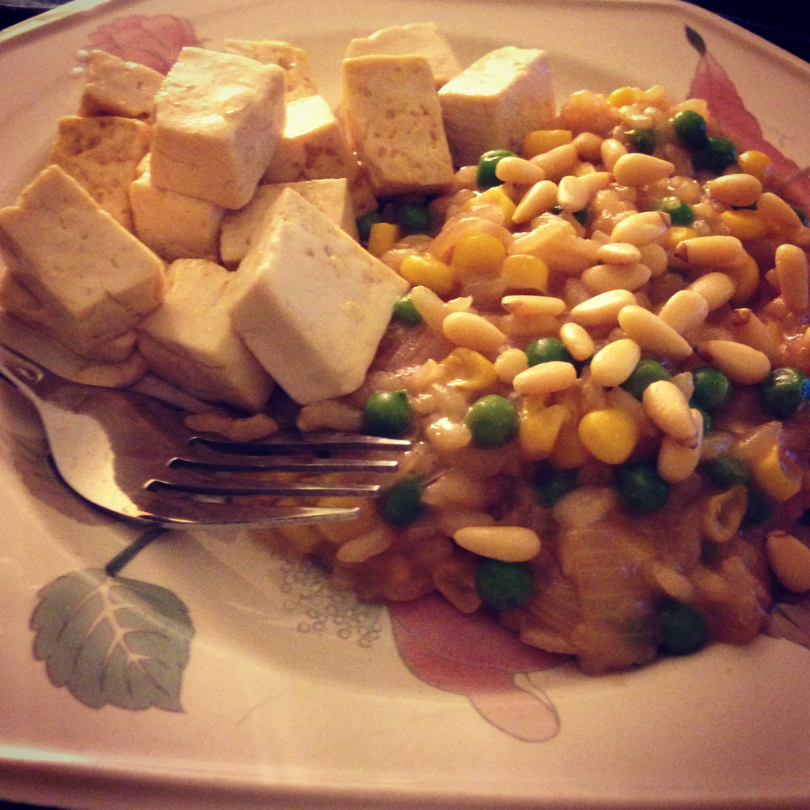

Madalyn Parker is a fourth-year student pursuing a Bachelor of Science degree in Computer Science through Lyman Briggs at Michigan State University. Her expected graduation date is December of 2013.
She is now working as a software developer intern for TechSmith on the Camtasia Relay team. Here, she works with C# and the ASP/.Net framework to further develop the product, adding features and eliminating bugs through the Agile process model. Also, this internship has given her opportunities to work on an application for the Windows Phone 7. She has worked part-time as a web programmer at MATRIX through Michigan State University, designing and implementing web pages focusing on managing, displaying, and analyzing large amounts of data using PHP, MySQL, and jQuery. She is in charge of K-12 outreach for the Michigan State University group, Women in Computing. This group has helped her to develop networking skills, and has allowed her to expose younger students to the field of computer science.
Taking care of her two rabbits (Tobias and Bellatrix)
Cooking new meals

Going thrift shopping